Non-Original Creations
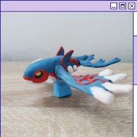Kyogre
This was the very first thing I made with clay and was made about a year ago now.
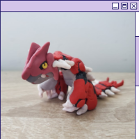Groudon
This was the second thing I made, I mainly made it to make sure Kyogre wouldn't flood my desk.
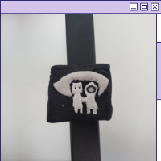Little Nightmares 2 Magnet
I had a really big little nightmares phase but wasn't skilled enough to make a figure of the charecters, so I opted to make this simple little magnet instead.
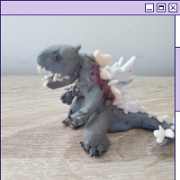 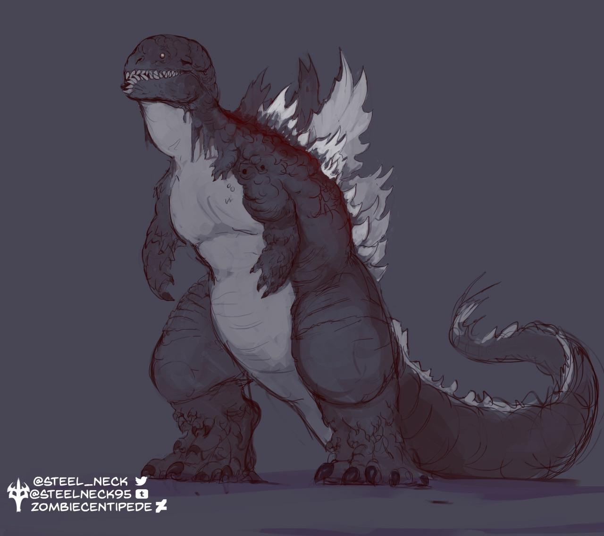Godzilla the Blackmass
During this time, I discovered some a webcomic called "Godzilla The Black Mass" by steelneck95. The art is absolutely amazing and I love the design of this Godzilla, so I attempted to make a figure of it. Now this was a long while ago so now that I have a better idea of what I'm doing, I'll deffinitly give it a second try. Also if you want to read his series, click on the image on the left, I'd highly recommend.
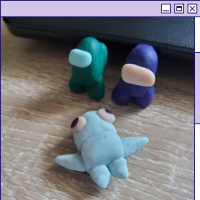Among us and Repo
I was bored.
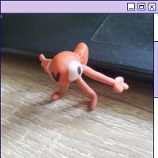Poisson Steve
I wanted to make the funny fish.
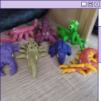Miscelleneous Arthropods
I like insects and other arthropods quite a lot, so it only made sense to make some for my desk. Personally, my favorite is the centipede mainly because I think it's the most well made and partly because I like centipedes a lot, deffinitly an underrated animal.
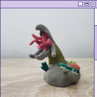Graboid
Graboids are these giant worm monsters from the 1990 film Tremors. I made this because Tremors holds a special place in my heart as Me, my dad, and my brothers did a marathon of movies 1-5 and it was a ton of fun.
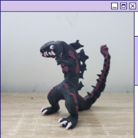Shin Godzilla
This was the first sculpture I made after buying some wire. I was still freestyling for the most part but instead of using only clay, I used wire and tinfoil to build a skeleton and then I added the clay one afterwards. This is one of my favorite sculptures, mostly because I really like Shin Godzilla.
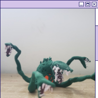Biolante
I wanted to make another Godzilla kaiju and I was locked in intense debate, the three kaiju I was debating were: King Ghidorah, Destroyah, and Biolante. I eventually chose Biolante because it looked the least impossible to make. Don't get me wrong, I really like Biolante's design and it's very strange backstory, but it was up agaisnt the undisputed goats of Godzilla villians.
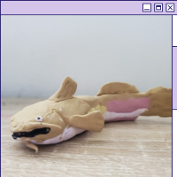Stonecat Trophy
I made this recently to celebrate getting the number 1 rank for the number of Stonecat observations in the entire world on Inaturalist.
Original Creations
Ball Of Eyes
The aptly dubbed "Ball Of Eyes" was one of the first anomalies to appear on Earth, it's first sighting being May 23rd 1990. So far, the Ball Of Eyes has been harmless, all it does is float around and observe it's surrondings. We believe its some kind of living tumor, possibly from cosmic whales, which were observed feeding in the milky way when the Ball of Eyes first appeared. Sadly, we cannot test this theory since being it produces a currently unknown type of radiation which we cannot defend against.
Jared
Jared is the affectionate nickname to anomaly 167. We first learned about the existence of Jared in june 7th 2001 in the town of Helen, Georgia. According to our source, an older woman by the name of Martha Stewart, Jared has existed in the woods around the town for the past 500 years. Martha further explained that Jared was the center of a ritual for the women to find a husband, where they would bathe in it's pheromones. After we captured Jared, we tested the pheromones and were able to conclude that the pheromones have the ability to attract the opposite gender.
Gleebus and Gumbo
The names Gleebus and Gumbo are the english pronounciations of the names of these two aliens. They came to earth in the year 2032 as refugees from the galactic war in the Hoag's Object. Since then, they've been invaulable in building relationships with allies from beyond the stars. These relationships are between the Gleera Civilization, the Jalarians, and the Yunams. These alliances have prevented humanity from total destruction from the Frodinian Empire during the intergalactic war of 2057. For this reason, Gleebus and Gumbo are celebrated as heroes every year on August 7th.
Kraken Fish
The Kraken Fish(Piscis Marina) was the very first fully man made species that combined traits from multiple completely unrelated animals such as different species of fish, crabs, and cephlapods. This animal gets around the size of a Bluefin Tuna and it is a very commonly farmed fish due to being able to get calamari, fish meat, and crab legs all from one animal. Its flesh is said to be very similar in taste to dogfish but slightly tougher, its 4 crab like limbs are often compared to king crab in taste, and it's tentacles(once turned into calamari) taste like most squid, just more tender due to their lesser amount of muscle.

Joseph
Joseph is the name given to the first man made species to be sold on the open market as a pet. Before this, man made species were either to be used for food production or for military purposes. Joseph's is "Bullseye Walking Fish" and he lived happily until dying peacefully of old age at the age of 15 human years.

Bobier
If you are to ever to awake to 5 perfectly round holes in your hand, then that is the fault of Bobier. Bobier is a young elder god, what is he the god of you ask? The god of holes. Being a younger elder god, he tends to get bored and as a way to pass the centuries, he puts holes in the hands of mortals across the galaxy. This has also made him an outcast, as the other elder gods find him annoying for this habit of his. If you afflicted by Bobier, do not panic. The holes will close on their own, though it is a painful process so we recommend to sleep through the process using a powerful tranquilizer.
The True North Star
When you look up into the sky and see the brightest star in the sky, you would be inclined to inform your friends "That's the north star" but you would be wrong. The True North Star is an elder god that lives within the largest iceburg in the north pole. It was also the cause of the great extinction event on January 4th 3045, where, due to hummanities own huberis, we let the ice melt. The first country to fall was Canadia, north imperia followed soon after. At the end of the 24 hours, the humans that didn't escape earth, had been killed. To prevent the entity to spread to the mars colony, humanity forced earth into a new ice age. The North Star was soon incased in ice once more and over the next 100 years, earth was terraformed to make it liveable once more but is it really earth? The species, the climate, the geography, and the even the people are no longer the same.
The Caged Eye
The Caged Eye is an entity we found in THE VOID. THE VOID is the place where the elder gods reside and as the name implies, it is the essence of nothingness, in fact the nothingness is so overwhelming that the human mind cannot comprehend it. We were able to determine that The Caged Eye as once a judge/survillence system to keep the elder gods in check. It seems that it has long since retired from this job and has since had it's vision taken by putting a cage over its eye. The reason for this measure is currently unknown.
The Bungus
The creature you are looking at is the Bungus. Bugus' are aliens from planet Y-98B, they are a primative and hostile species. Despite their primitivness, they are on the route of building a civilization, which makes them of great interest to Earth as it may give us insight to the birth of our own civilization.
The Failed Mimic
During the 60s, the CIA needed a weapon they could use agaisnt the vietnamese during the vietnam war, since their tatics were rendered useless due to the gueriella warfare tatics of the vietnamese. So, the CIA funded production of the mimic: A monster that would be able to easily navigate through the jungle and take advantage of the vietnamese supersticious culture. First, they built a simple conduit: a limestone statue with biological elements.Limestone was the first material discovered that could absorb souls and was used for all primitive conduits. Lastly, they had to input a soul into it. So, they brough forth a deathrow inmate. There was a malfunction though and the conduit absorbed the souls of the scientists instead, contorting its form from a humanoid shape to something more grotesque. The mimic then escaped, the CIA began to hunt it down after incidents relating to it using its star-shaped head to disguse itself in daycare decorations and lure in children to consume them. The Mimic was never found.
Armato Rege
This is acctually an alien from my story "Expedition to C-100". For this reason, I'm not going to explain it's biology, behaivors, etc on this page. Instead, you can go to the alien page if you're interested. Also, this is the single biggest clay sculpture I have, its about the size of my hand and weighs as much as a baseball.
The Star Gazer
The first Star Gazer was built in the United Imperium in the year 2092, and it was a huge step for the collection of Cosmic Radiation. The Cosmic Radiation collected was for project [REDACTED]. The Star Gazer was so good at collecting Cosmic Radiation due to its mix of Cosmic Whale DNA and mechanical elements. Cosmic Whales are already well adapted to collect energy from the cosmos, so it made sense to use technology to enhance their collection ability. This use of Cosmic Whale DNA does have its side effects, those being Star Feeders. Star Feeders are parasitic organisms that attach to Cosmic Whales and feed off of them. Since the Star Gazer uses Cosmic Whale DNA, Star Feeders are attracted to it.

Inspirations
My main inspirations for the creatures I've created are Doctor Nowhere, Bobier is esspecially inspired by Doctor Nowhere and other similar artists. In a similar vain, Vita Carnis by Darian Quiloy is another inspiration, I really like the design of the meat snake and the speculative biology aspect of the entire series. Another inspiration for my creations are Zooliminology, I love the oddly cute designs of the creatures in those series. Another inspiration is Steelneck, I really like the very tumorous and gross look of his renditions of kaiju.
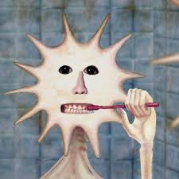Dr Nowhere
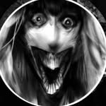Draxxom
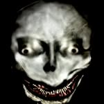Bxneswxrth
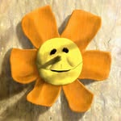Elcoronelsantiago_
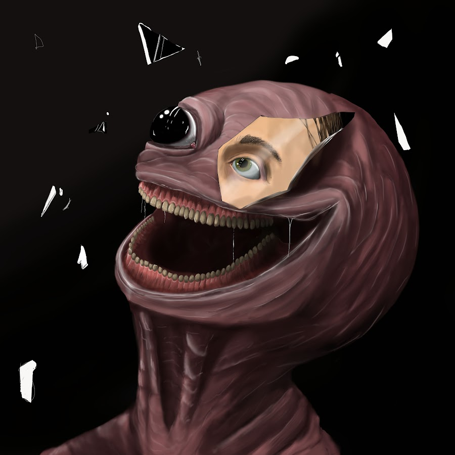Darian Quilloy
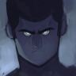Steelneck